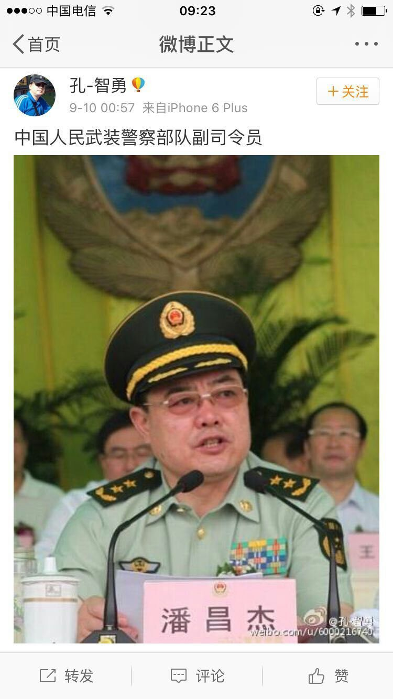
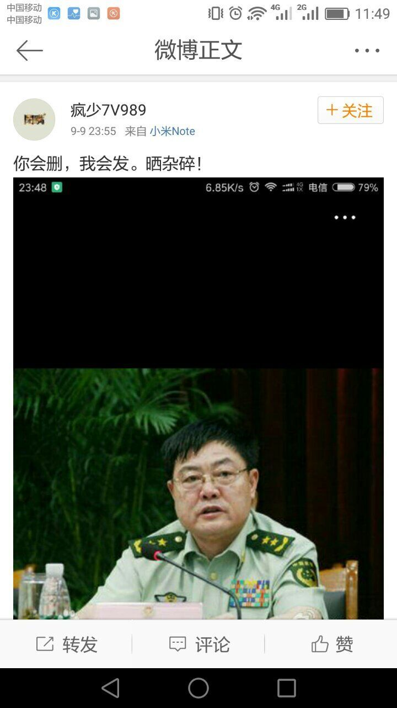
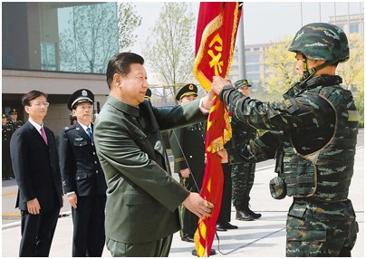
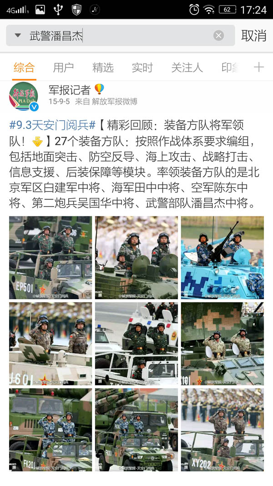
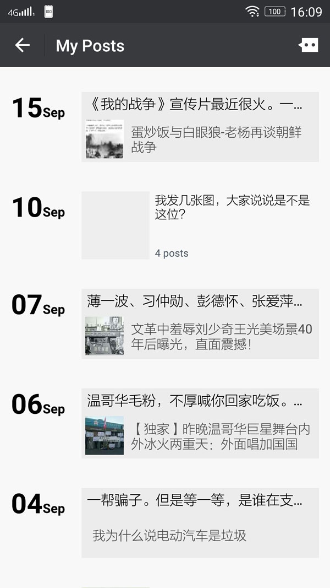
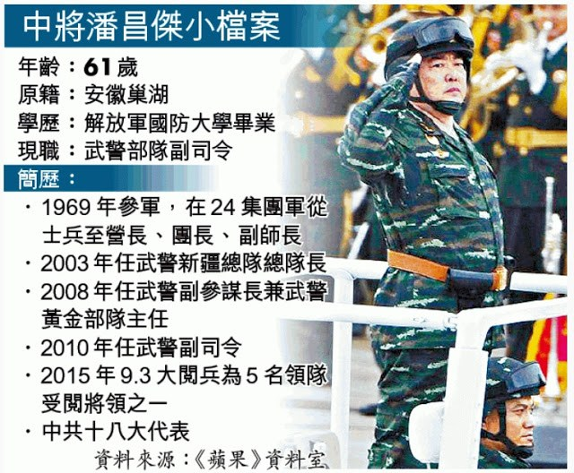
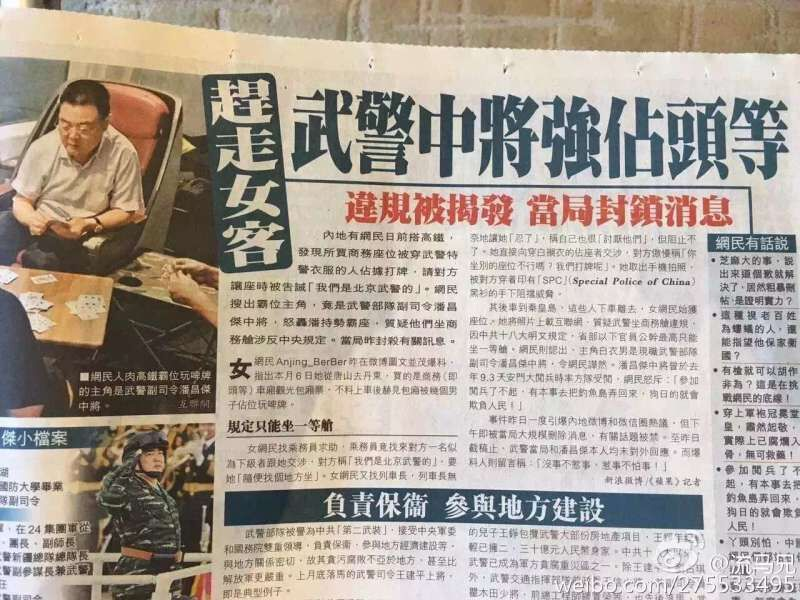
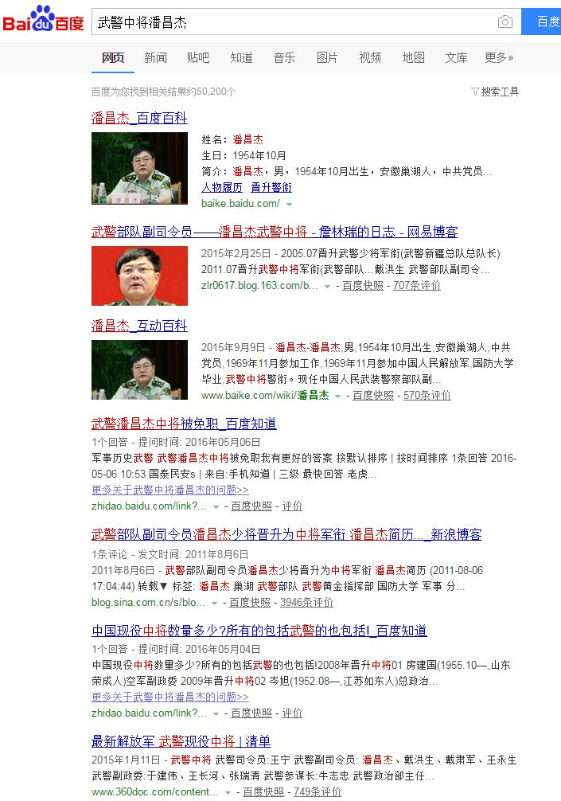
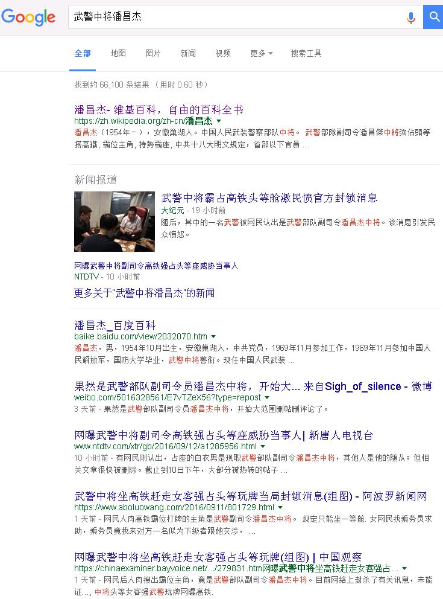

老杨急就章系列（5）
打 牌
by 长沙杨飞
打扑克牌是老少皆宜的休闲活动，也是火车上消磨时光的好工具。但坐火车打牌引发国际性关注，估计谁都没想到。不多说，大家看图吧，这是我在微信群里看来的：
博主是一个美女Anjing_BerBer，她这条长微博发出的时间是2016年9月9日。很快就有网友指出，这个白衣打牌者貌似武警部队副司令员潘昌杰中将。有好事者还贴出了潘昌杰将军的大头照：





奇怪，这条朋友圈一直到第二天都没有任何反应，无人点赞无人留言。平时那几个习惯性点赞的人都消失了。经过和几位朋友截图对比，确认我这条朋友圈已被屏蔽，只有自己可见。您若不信，请加我微信13974850714，看看我的朋友圈是否有9月10号这条。
微博和微信都阵亡了，不过QQ群里还是有人在传，这两张图片就是QQ群里看来的：



百度搜索倒是有五万多条结果，但是潘将军打牌的事一条都没有。无奈我只得翻墙上谷歌。这是9月12日Google搜索截图：

不看不知道，一看吓一跳，谷歌搜索有六十多万条结果，前几页几乎全是潘将军打牌的事，全球各大媒体都有报道。与之对应的是中国大陆媒体鸦雀无声，互联网全盘封杀，包括网站、搜索、微博和微信朋友圈。
火车上打牌引发国际性关注，这事谁也未曾料到。翻了翻海外媒体，很多都在炮轰当局对媒体和互联网的严格管制。这事确实出乎大家意料。按理中将也不算很大（全国有数千名将军），像郭伯雄和徐才厚等一帮上将都被拿下了，公开了他们的“事迹”，让全国人民批判，为啥一个打扑克的中将却要全力保护呢？
按很多国人在公共场所的习性，占座打牌的事迹并不算特别恶劣，很难说触犯军纪，更谈不上违法。他自己做错了事，站出来道个歉就是了。实在不行，再让他在电视上认个错，正好杀一儆百，整顿军纪。我个人观点，为打牌的小事封锁互联网并非明智之举，事情反而越搞越大，全球媒体都在看中国的笑话，实属得不偿失。
杨飞，
2016/9/21，长沙
关注老杨作品：
1，杨飞摄影 www.midphoto.com
2，微信：yangfei789288
3，微信公众号@长沙杨飞
4，新浪微博@长沙杨飞
5，推特Twitter@feiyang17
6，Facebook：yangfei999999@hotmail.com